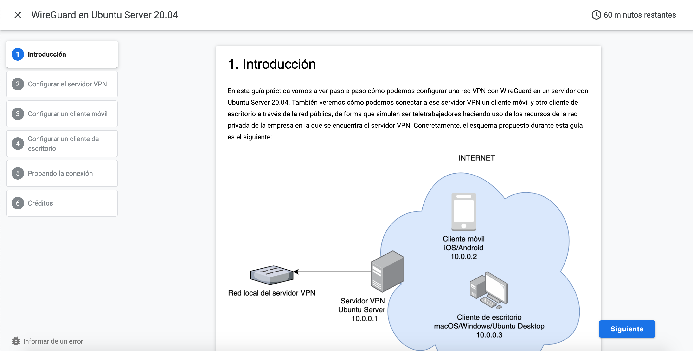
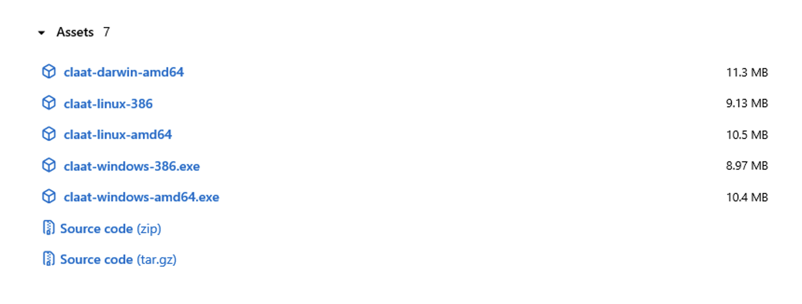
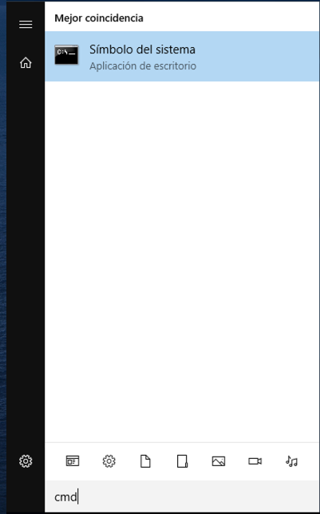
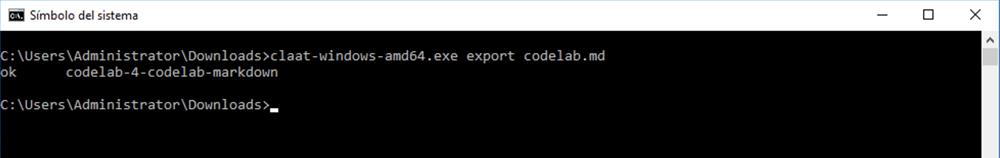
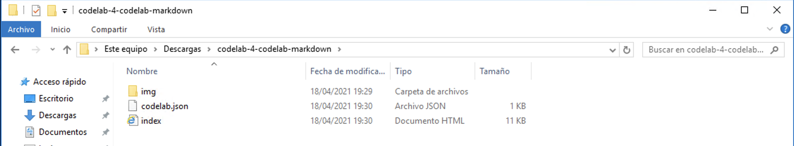

¿Quieres crear un contenido similar a este tutorial? A continuación aprenderás cómo crear tu propio CodeLab en muy poco tiempo.
A la hora de crear un CodeLab tenemos dos opciones:
En este CodeLab vamos a explicar la segunda opción y crear el nuestro usando un fichero Markdown. Esto nos garantiza la flexibilidad de reutilizar el archivo en otras ocasiones y la posibilidad de almacenarlo en nuestro repositorio de Git con cualquier otro código que pudiese ser útil en un tutorial. No obstante, puedes ver cómo hacerlo a partir de un Documento de Google en este artículo de Juan Antonio Gómez.
Este es otro ejemplo de cómo puede quedar un CodeLab generado:

Créditos y Recursos:
Para crear un CodeLab, necesitas tener instalados Go y claat (la herramienta por línea de comandos de codelabs).
A continuación puedes ver las instrucciones de instalación para los sistemas operativos más populares.
###Windows
Vamos a la página de releases de claat y descargamos la versión apropiada. Si tienes Windows de 64 bits, descargamos "claat-windows-amd64.exe".

###Linux (Probado en Ubuntu)
Vamos a la página de releases de claat y descargamos la versión apropiada. Si tienes Linux de 64 bits, descargamos "claat-linux-amd64".
Abrimos una terminal y accedemos a la carpeta en la que tengamos descargado el ejecutable de claat.
Le damos permisos de ejecución:
sudo chmod +x claat-linux-amd64
(sustitumos claat-linux-amd64 por nuestra versión)
###macOS
Instala Go si no has hecho aún. Puedes usar Homebrew si lo tienes en macOS:
$ brew install go
Ejecuta lo siguiente en una Terminal para establecer las variables de entorno necesarias:
$ export GOPATH=$HOME/Go
$ export GOROOT=/usr/local/opt/go/libexec
$ export PATH=$PATH:$GOPATH/bin
$ export PATH=$PATH:$GOROOT/bin
Para instalar claat, ejecuta lo siguiente en una Terminal:
$ go install github.com/googlecodelabs/tools/claat@latest
Ahora deberías tener el comando claat disponible en la terminal.
$ claat
Ahora que tenemos el entorno configurado, vamos a crear un fichero markdown en el que escribiremos un CodeLab.
Crea un archivo llamado codelab.md y ábrelo con tu editor de texto favorito.
Copia y pega la cabecera a continuación en el fichero markdown y modifica los valores acorde al CodeLab que quieres crear. Debajo del ejemplo tienes la explicación de cada una de las variables.
author: Nombre del autor summary: Resumen del CodeLab id: identificador-unico-del-codelab categories: codelab,markdown environments: Web status: Published feedback link: Un enlace en el que los usuarios puedan darte feedback (quizás creando un issue en un repositorio de git) analytics account: ID de Google Analytics
Los metadatos consisten en parejas de valores clave de la forma "clave: valor". Los valores deben estar en una sola línea. Todos los metadatos deben escribirse antes del título del CodeLab. En principio se pueden utilizar todas las claves y valores que quieras, sin embargo, solo los siguientes los interpretará el renderizador:
Añade ahora tu título usando el carácter almohadilla ‘#' (equivalente a la primera cabecera en markdown)
# Título del CodeLab
Luego para cada sección usa la segunda cabecera de markdown o ‘##' y especifica, de forma opcional, el tiempo estimado necesario para completar esa sección. Este tiempo estimado se indica como "Duration" con el formato hh:mm:ss.
Ejemplo:
## Sección 1
Duration: 0:10:00
## Sección 2
Duration: 0:05:00
Ahora que tenemos 2 secciones en nuestro CodeLab podemos añadir contenido en cada sección. Copia y pega el ejemplo a continuación debajo del Duration de la sección 1:
### Cajas de información
Texto plano dentro de cajas de información verdes y amarillas
Negative
: Esto aparecerá en una caja de información amarilla.
Positive
: Esto aparecerá en una caja de información verde.
¡Ya tienes tus cajas de información creadas!
### Lista con viñetas
Texto plano en una lista con viñetas:
* Hola
* CodeLab
* Mundo
¡Ya tienes tu lista con viñetas creada!
### Lista numerada
1. Lista
2. Utilizando
3. Números
¡Ya tienes tu lista numerada creada!
En la sección 2 vamos a añadir varios elementos más, una imagen entre ellos. Para añadir imágenes locales, crea una carpeta al lado de tu fichero .md llamada "img". Dentro de la misma, añade una imagen cualquiera que se llame prueba.png.
Copia ahora en la sección 2 (debajo de Duration):
### Añade un enlace
¡Añadiendo un enlace!
[Ejemplo de enlace](https://www.davidlms.com)
### Añade una imagen
¡Añadiendo una imagen!

### Incrusta un iframe

Puedes encontrar más ejemplos aquí.
Ahora que tenemos un CodeLab inicial definido en nuestro archivo markdown, vamos a generar la página web estática. Podemos exportar y servir el contenido de forma local usando el comando claat que instalamos anteriormente.
###Windows
Movemos nuestro archivo codelab.md que queremos generar a la carpeta en la que tengamos descargado el ejecutable de claat.
Abrimos el símbolo del sistema y accedemos desde el mismo a la carpeta en la que tengamos descargado el ejecutable de claat.

Escribimos el siguiente comando:
claat-windows-amd64.exe export codelab.md
(sustitumos claat-windows-amd64.exe por nuestra versión)

Y ya tendremos nuestros archivos generados.

A continuación, podemos servirlo de forma local ejecutando el comando:
claat-windows-amd64.exe serve
(sustitumos claat-windows-amd64.exe por nuestra versión)
###Linux (Probado en Ubuntu)
Movemos nuestro archivo codelab.md que queremos generar a la carpeta en la que tengamos descargado el ejecutable de claat.
Abrimos una terminal y accedemos desde el mismo a la carpeta en la que tengamos descargado el ejecutable de claat. Ejecutamos el comando:
./claat-linux-amd64 export codelab.md
./claat-linux-amd64 serve
(sustitumos claat-linux-amd64 por nuestra versión)
###macOS
Abre una Terminal y accede desde la misma a la carpeta en la que se encuentre el archivo codelab.md. Luego ejecuta:
$ claat export codelab.md
$ claat serve
Cuando ejecutaste el comando claat export creaste el sitio web estático necesario para alojar en un servidor web tu CodeLab. Se generó una carpeta con el identificador que especificaste en "id" que contiene todos los archivos de la página, entre ellos el index.html, que puedes abrirlo de forma local.
Negative : Ten en cuenta que cuando ves la página localmente abriendo el index.html algunos de los gráficos no se mostrarán (como access_time, Next, Back), pero funcionarán una vez esté online.
Ahora que tienes el contenido estático generado puedes alojarlo donde prefieras. Una opción es subiéndolo a un repositorio de Github y servirlo usando Netlify.
Si quieres crear tu propio índice con enlaces a los CodeLabs, similar a este, también hay una herramienta que lo hace. Echa un vistazo aquí: CodeLabs Site